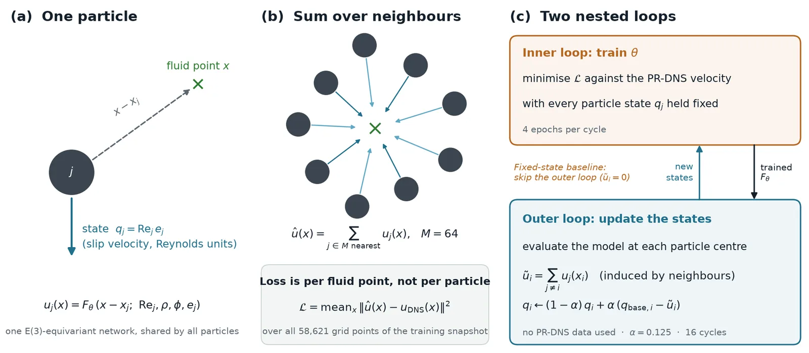
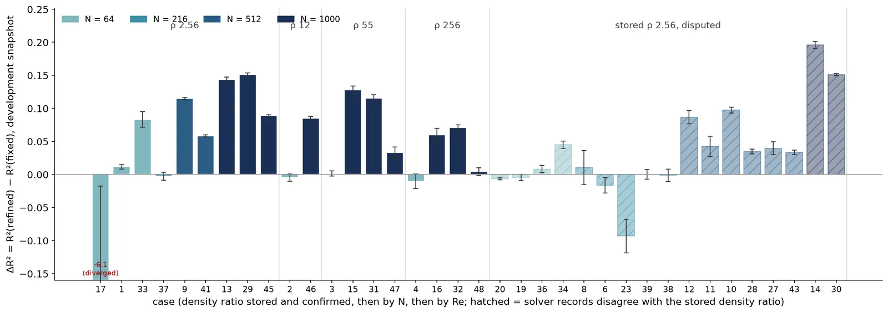
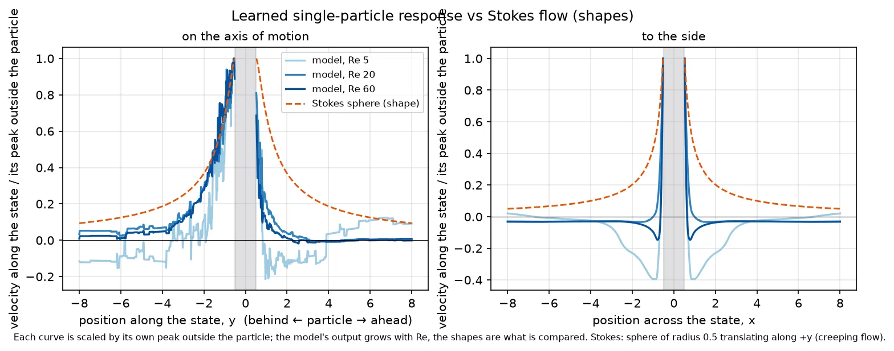
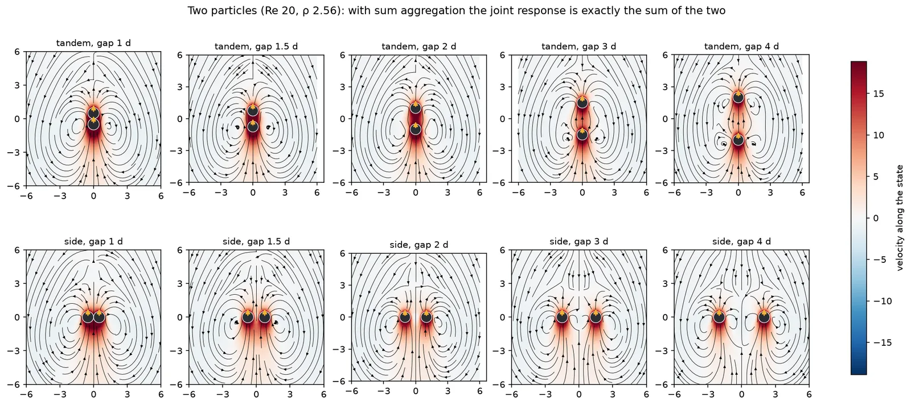
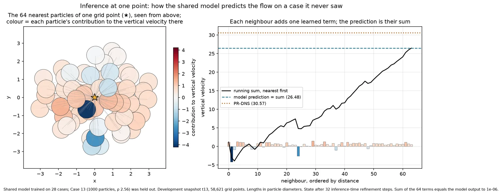

Entry
Particle-resolved direct numerical simulation (PR-DNS) of a settling suspension resolves the flow around every particle. It is the reference for how particles interact through the fluid, and it costs hours of compute for a few seconds of physical time. This project, with Prof. S. Balachandar's group and Dr. Joel Harley, asks whether a learned model can reconstruct that flow from the particle positions and motions alone.
The idea comes from a line of work that predicts the flow that mediates particle interactions rather than the final forces. Each particle carries a one-particle disturbance flow, and the many-particle flow is assembled from those reusable responses. What makes it hard is that each particle's response depends on the ambient flow it sits in, and that ambient flow is itself made of its neighbours' responses.
One network, summed over neighbours, made self-consistent
The surrogate has three pieces.

- One learned response. A single E(3)-equivariant network takes a particle's state (its slip velocity, in Reynolds units, plus the density ratio and volume fraction of the suspension) and the offset from the particle to a fluid point, and returns that particle's velocity contribution at the point. Equivariance means rotating the inputs rotates the output exactly, so the network never has to learn that physics is the same in every direction.
- Superposition. The predicted velocity at a point is the sum of the contributions of its 64 nearest particles. The loss is the squared error against the PR-DNS velocity at every grid point (58,621 points per snapshot), not per particle.
- Self-consistency. The particle state should be the particle's motion relative to the flow induced by its neighbours, which is unknown at the start. An outer loop evaluates the current model at every particle centre, sums the neighbours' contributions, and moves each particle's state a small step toward the result. Training and state updates alternate. No simulation data enters the state update.
The baseline is the same model with the outer loop switched off (the ambient flow taken as zero), so the comparison isolates what self-consistency adds.
Where it helps: dense suspensions
We packed 36 of the PR-DNS cases (64 to 1000 particles, particle-to-fluid density ratio 2.56 to 256, particle Reynolds number 8 to 66), trained on one snapshot, and scored on another.

The gain tracks crowding. Every 1000-particle case improved (median +0.115 R²) and every 512-particle case improved (median +0.058). The 64- and 216-particle cases changed by about zero: when particles are far apart, the ambient flow a particle sees is close to the mean flow, and the starting state is already a good one. Two dilute cases got worse, one of them badly, which became the starting point for the work on step sizes and stability in a later post.
What the network learned
Because the prediction is a sum of one term per particle, the term for a single particle can be evaluated on its own. That gives a direct look at the response the network applies to every particle.
The particle drags fluid with it and leaves a trailing wake that lengthens as the Reynolds number grows. Along the axis of motion the profile behind the particle follows the shape of Stokes flow past a sphere; ahead of it the disturbance decays faster, the fore-aft asymmetry that inertia produces at finite Reynolds number. To the side there is a weak return flow, plausible for a particle inside a suspension where fluid has to pass back around it. Rotating the particle's direction of motion rotates the whole response to within 3 × 10⁻⁷ of the rotated field, which is equivariance holding at floating-point precision.

Two particles side by side or in tandem simply add, because the aggregation is a sum. That is a modelling choice, not a discovery, and it is worth stating plainly: everything non-additive about the interaction has to enter through the particle states, which is exactly what the outer loop provides.

Prediction at one point
At a single grid point, the prediction is the running sum of 64 terms. The nearest particles do not dominate; in the example below the two closest even pull the prediction down, and most of the value comes from many small contributions further out.

On a case held out of training, refining the particle states with the trained model frozen raises R² from the starting state to about 0.83 within 15 to 20 steps, and one whole-field prediction takes about five seconds on a single GPU. What happens if you keep iterating past that point is its own story.
What came next
The single-case results raised three questions, each followed in its own post: whether one model can serve every case at once (it can, mostly by fixing its inputs), how far to push the self-consistent iteration (less far than you would think), and how to run that many experiments without fooling ourselves (a research loop across two clusters).